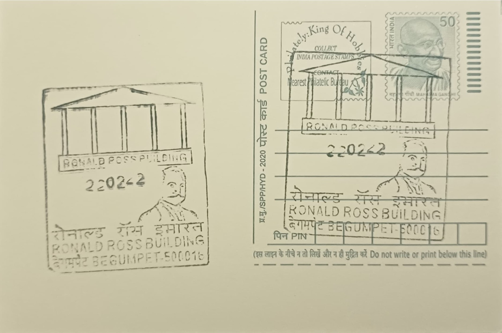

Ronald Ross Building
రొనాల్డ్ రాస్ భవనం


The Sir Ronald Ross Building takes its name directly from the British physician who worked within its walls rather than from any older toponym, and it is this personal association that has defined the structure ever since. Ronald Ross, an officer of the Indian Medical Service, arrived in Secunderabad in 1893 as a general duty medical officer attached to the regiment stationed there, and he began his mosquito-dissection experiments in a laboratory within the old Begumpet military hospital complex, built in 1895. The surrounding marshland, considered a nuisance by the garrison, proved unexpectedly useful to his research by sustaining the mosquito populations he needed to study, and the site's name has carried his identity into the present day as both a heritage building and a research institute.
The building's core significance lies in its place in the history of tropical medicine rather than in any religious or architectural distinction. It was here, on 20 August 1897, that Ross dissected the stomach tissue of an Anopheles mosquito that had fed on a malarial patient and observed the pigmented malaria parasite within it, furnishing the first direct physical evidence that mosquitoes were vectors of human malaria. The date is now marked annually as World Mosquito Day. Ross's subsequent work tracing the parasite's life cycle in avian hosts confirmed the transmission mechanism beyond dispute, work that extended Patrick Manson's earlier hypothesis and earned Ross the 1902 Nobel Prize in Physiology or Medicine, making him Britain's first laureate in that category and placing the Begumpet laboratory among the foundational sites of parasitology.
As a piece of colonial-era military medical infrastructure, the building was a modest single-storey laboratory attached to the garrison hospital rather than a purpose-built research institute, reflecting the improvised conditions under which Ross conducted his investigations using limited equipment and locally caught mosquito specimens. After Ross's departure from India, the structure passed through various administrative uses tied to the cantonment and later civilian authorities, and it was only in 1955 that it was formally reconstituted as a dedicated research body, the Sir Ronald Ross Institute of Parasitology, functioning as a division of Osmania University. This transition converted the original experimental space into an institution with a continuing mandate for malaria and parasite research, anchoring the building's scientific identity in a formal academic structure rather than leaving it as a standalone historical curiosity.
Beyond its scientific legacy, the building acquired an unusual secondary chapter when its premises were later used for aviation training, during which a young Rajiv Gandhi, long before becoming India's Prime Minister, trained as a pilot at a flying club associated with the site. This layering of a globally significant medical discovery with a footnote in Indian political history gives the building a distinctive dual character uncommon among comparable heritage science sites. The site today also houses a small museum documenting Ross's experiments, his notebooks, and the instruments associated with his dissections, allowing visitors to view recreated elements of the original 1897 laboratory setting alongside exhibits explaining the broader history of malaria research in India.
The institute continues to function under Osmania University, maintaining its research and museum activities while being recognised by heritage bodies as one of Telangana's protected colonial-era structures, with commemorative plaques installed by medical and scientific associations marking the exact site of Ross's discovery. It has also featured in international commemorations of World Mosquito Day, drawing attention from global health organisations tracing the origins of malaria vector research back to this single Begumpet laboratory. The Sir Ronald Ross Institute of Parasitology thus persists today as a working link between a nineteenth-century cantonment hospital and modern academic parasitology, administered as part of Osmania University's research network rather than as a purely commemorative monument.
| Date of Introduction | August 20, 2021 |
|---|---|
| Address | Sub Postmaster, |
| Begumpet SO, | |
| Hyderabad (dt.), Telangana - 500016. |